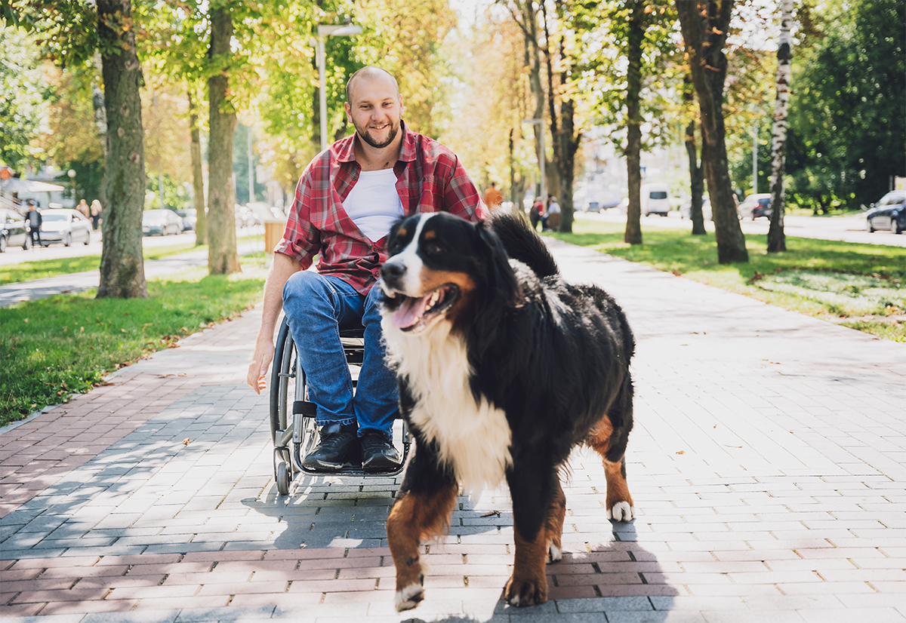

About Twin Cities Animal Rescue
Helping animals find safety, care, and loving homes.

Our Mission
Twin Cities Animal Rescue is dedicated to helping animals in need throughout the Minneapolis–Saint Paul area. We provide adoption, fostering, volunteer opportunities, and community support.
Our Story
Our organization was created to connect animals with caring people while building a stronger and more compassionate community.
How Would You Like to Help?
Select an option to learn more about how you can make a difference.
Choose an option above to get started.